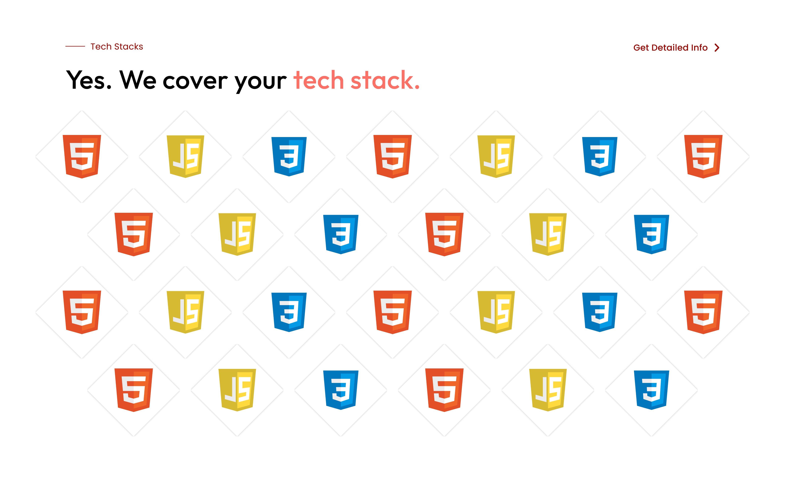
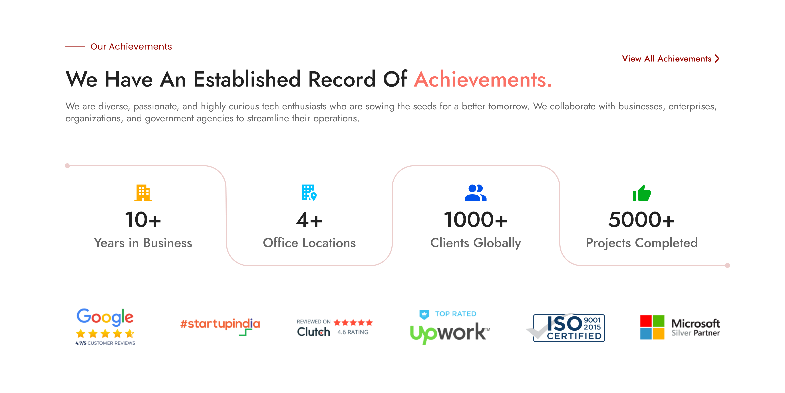

Revamping TechBits Solutions: A Minimalistic UI Redesign. This project focused solely on enhancing the visual interface without altering content. The client's request for a redesign prompted a minimalist approach, streamlining the user experience while maintaining familiarity. Discover the refined simplicity of TechBits Solutions' new UI, thoughtfully crafted to elevate usability and aesthetics without disrupting the core content.
Hero Section with Development Languages Showcase: The homepage begins with a captivating hero section showcasing various development languages, designed to immediately capture the attention of visitors and emphasize the company's expertise.
Client Showcase with Classy Scroll Effect: Following the hero section, a sophisticated scroll effect highlights the client showcase, adding elegance and professionalism to the presentation of client testimonials and partnerships.
Best Solution Highlight with HD Images and Creative Graphics: The "Best Solution" section features new HD images and graphic elements, enhancing visual appeal and reinforcing the company's commitment to delivering top-notch solutions.
Services Section with Modern Icon Illustrations: Utilizing modern icon illustrations, the services section offers a visually engaging representation of the company's offerings, making it easy for visitors to understand the range of services provided.
Achievements and Case Studies Showcase with UI Creativity: A creatively designed section highlights the company's achievements and case studies, showcasing past successes in an aesthetically pleasing and easy-to-navigate format.
Career Section Addition: A newly added career section provides information about job opportunities within the company, catering to potential employees and fostering recruitment efforts.
Blogs Section for Industry Insights: Offering valuable insights and industry knowledge, the blogs section serves as a resource hub for visitors seeking information on relevant topics and trends.
Reviews or Testimonials Page: The addition of a reviews or testimonials page provides a platform for customers to share feedback, helping to build trust and credibility while also providing valuable insights for continuous improvement.
Through these enhancements, the redesigned website not only improves the visual appeal and user experience but also reinforces the company's brand image and commitment to excellence.
Footer with New Design and Animation: The footer adds a finishing touch to the website with its fresh design and animated elements. Seamlessly integrated into the user interface, the footer enhances navigation and user experience, ensuring visitors can easily access important information and resources.